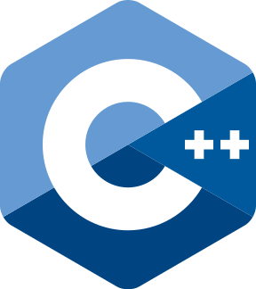

C++入門（数値シミュレーション向け）
Pythonの基本構文を理解した上で，数値シミュレーション用にC++を学習したい方向け．
数値シミュレーションとは
数値シミュレーションとは，現実のシステムやプロセスを模倣してルールを定義し，コンピュータ上で実行することで，そのふるまいや性質を予測したり分析したりするために使います．日常的にお世話になっている天気予報は，大気や海洋・陸地の状態を物理方程式に従ってコンピュータ上で時間変化させ，将来の状態を予測しています．
参考：気象庁, 数値予報とは https://www.jma.go.jp/jma/kishou/know/whitep/1-3-1.html
シミュレーションは決定論的なものと確率論的なものに分類できます（単に決定的，確率的ともいう）．
- 決定論的シミュレーション: 状態の変化が直前の状態によって完全に決定されるもの．初期値とパラメータが決まれば，状態の変化は常に同じ．
- 確率論的シミュレーション: 状態の変化が確率的に決定されるもの．サイコロの出た目によって行動を変えるようなシミュレーションがこれに当たります．
高安研究室で使われているシミュレーションの例を紹介します．
-
ディーラーモデル
金融市場に参加するディーラーたちの戦略を定義し，マクロな現象として観測される暴騰・暴落などの金融市場価格の動的なふるまいとの関係を探る．順張り・逆張り戦略取るディーラーの比率を変えたり，利益確定や損切りの閾値を変えたり，政府による為替介入を導入できたりと，発展性が高い．
- Yamada, Kenta, Hideki Takayasu, Takatoshi Ito, and Misako Takayasu. 2009. “Solvable Stochastic Dealer Models for Financial Markets.” Physical Review. E, Statistical, Nonlinear, and Soft Matter Physics 79 (5 Pt 1): 051120. http://dx.doi.org/10.1103/PhysRevE.79.051120
- 松永健太, 山田健太, 高安秀樹, and 高安美佐子. 2012. “スプレッドディーラーモデルの構築とその応用.” 人工知能学会論文誌 27 (6): 365–75. http://dx.doi.org/10.1527/tjsai.27.365
-
企業間取引ネットワークの時間発展モデル
新規参入する企業がどのような規模の企業と取引を開始するのか，どのような企業が合併・分社するのか，どのような企業が倒産するのかを調べ，マクロな性質である売上高や成長率，寿命の分布などを再現する．
- Miura, Wataru, Hideki Takayasu, and Misako Takayasu. 2012. “Effect of Coagulation of Nodes in an Evolving Complex Network.” Physical Review Letters 108 (16): 168701. http://dx.doi.org/10.1103/PhysRevLett.108.168701
- Ozaki, Jun ’ichi, Eduardo Viegas, Hideki Takayasu, and Misako Takayasu. 2024. “Integration of B-to-B Trade Network Models of Structural Evolution and Monetary Flows Reproducing All Major Empirical Laws.” Scientific Reports 14 (1): 4628. http://dx.doi.org/10.1038/s41598-024-54719-0
C++とは

1983年に開発されたコンパイル言語であり，データ解析の現場では重たい計算を回す際に使われています．C++はC言語の拡張であり，クラスや継承などのオブジェクト指向プログラミングの機能が追加されたほか，基本的なデータ構造やアルゴリズムが標準ライブラリにまとめられ，追加されました．Pythonから入った方には驚かれるかもしれませんが，C言語にはこれらの機能が備わっておらず，基本的にはすべて自前で実装する必要がありました．C++ではSTLを活用することで実装コストを抑えつつ，高速に動作するプログラムを作ることができます．
C++の強みと弱み
- 強み：適当に書いても速い
- 弱み：ファイル操作や図の作成には向かない
C++の強みを活かし，弱みを補うために，以下のように作業を仕分けることが多い．
- AwkなどのUNIXコマンド: データ抽出
- Python: 基本的な解析と図表作成
- C++: シミュレーション等の重たい計算
C++で覚えること
-
基本
- C++の使い方：コンパイルと実行方法
- 基本型：bool, char, int, double, void
- 関数：定義，関数呼び出し
- 制御文：if, for, while, switch
- コマンドライン引数：argc, argv
-
基本2
- 文字列：文字列型と数値型の相互変換
- 入出力：標準入出力，ファイル入出力
- コンテナ：vector, map, set, queue, stack, pair, tuple
- 数値計算：cmath, random
- アルゴリズム：sort, unique, reverse
-
シミュレーションの実装
- ディーラーモデル
- ネットワークの成長モデル（Barabashi-Albert model）
C++を網羅的に学習したい方は下記のサイト等を利用できます．一般向けのC++入門は，大規模開発に使うことを想定してオブジェクト指向プログラミングの機能の解説に重点を置いています．シミュレーションに必要な機能はそれよりもずっとシンプルですので，時間をかけて目を通す必要はありません．
勉強しなくて良いこと
- ポインタは使わない
- クラスの継承
- ヘッダーファイル